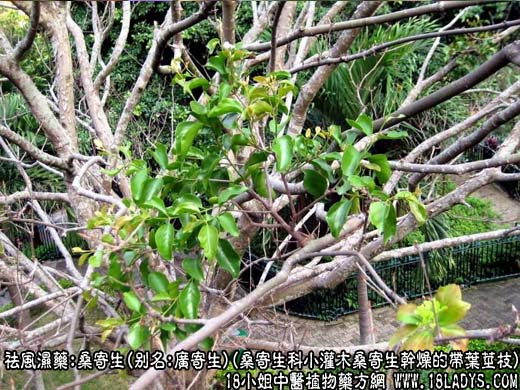
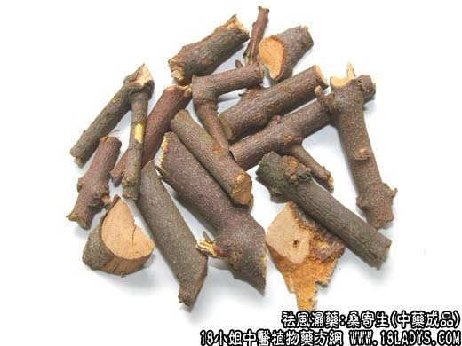
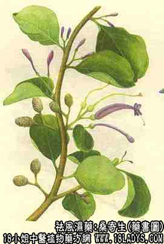

桑寄生为常用中药。《神农本草经》列为上品。原名桑上寄生。《本草纲目》除桑寄生外，又增柳寄生一项。现商品分广寄生，槲寄生二类。
别名：槲寄生，北寄生，广寄生（桑寄生）。
来源：1、槲寄生系桑寄生科植物常绿寄生小灌木槲寄生干燥的带叶茎枝。
2、广寄生系桑寄生科植物常绿寄生小灌木桑寄生干燥的带叶茎枝。
产地：槲寄生主产河北、东北、内蒙、安徽、河南等省。桑寄生主产广东、广西；云贵等省亦产。
性状鉴别：1、槲寄生；茎枝圆柱形，长约30厘米，直03~1厘米。黄绿色、节膨大，全体有皱纹。叶对生于分叉之顶端，倒披针形，叶片厚，通常具三脉，微有光泽。质轻脆，易折断。断面黄绿色，木质部色较浅成放射状花纹，髓明显。气微，味略苦，嚼之发粘。
2、广寄生（桑寄生）；桑寄生茎枝呈细长圆柱形，似桂枝，外皮红褐色，有无数细小的斑点（皮孔），嫩枝有棕褐色细毛。质坚硬，木质，不易折断，断面皮层红棕色，木部色较浅，中央有小髓心，色较深。叶多脱落，似革质稍脆，卵圆形，黄褐色，无锯齿。气微，味涩，以枝细，质嫩、红褐色，带叶者为佳。
主要成分：广寄生含降血压及强心成分，已分离出者有广寄生甙（即篇蓄甙）、槲皮甙，后者水解后产生槲皮素及阿拉伯胶糖。
北寄生含齐墩果叶酸及黄酮化合物，槲寄生甙。
药理作用：1、降压；浸出液有降低血压作用，作用点在内感受器，引起降压反射，或由于抑制延髓或脊髓血管运动中枢所致。但作用较短暂而不持久。
2、降胆固醇：临床试用初步结果，对降低血清胆固醇似有一定作用。
3、利尿：作用较显著，有效成分为广寄生甙。
4、抗菌：体久试验能抑制伤寒杆菌和葡萄球菌生长。
5、抗病毒：其煎剂对骨髓灰质炎病毒I、II、III型及Sackie 型均有显著抑制作用（可能为直接灭活），与淫羊藿同用其抑制作用更明显。此外，桑寄生ECHO及coxackie病毒也有明显抑制作用，又能抗流感病毒。
性味：苦平。
归经：入肝肾经。
功能：补肝肾、除风湿、强筋骨、养血安胎。
主治：腰膝疼痛。筋骨无力，胎动胎漏。
临床应用：1、治高血压病，适用于肝肾不足、阴虚阳亢，有头痛、眩晕、耳鸣、心悸的病例，取其有降压作用，可单用30~60g，水煎代茶，但因其力量有限，常配用晾血药如生地、赤芍、银花藤等水煎服，方如桑寄降压汤，对降压和改善症状，有一定效果。
2、治风湿痹病，适用于风湿性关节炎、风湿性肌炎而有腰酸软痛痹和其它血虚表现者，取其有和利血脉、舒筋活络、镇痛的作用，常配独活、熟地、防风、党参等，方如独活寄生汤（见独活项下）。
3、治妊娠胎动不安、胎漏下血(先光流产)，或腰背疼病，效果较好，常配黄芩、白术、续断等，方如桑寄安胎汤。
4、治小儿麻痹症，与淫羊藿配合效果更好。
5、治皮肤干燥症，即中医所称“肌肤甲错”，由血虚血滞所致，因血液不能营养肌肤，以致皮肤枯燥，甚者如鱼鳞状。前人认为桑寄生能“光肌肤”，故能治疗本病，其作用原理尚待进一步研究。用法为每次桑寄生30~60g，加鸡蛋一只和沙糖适量，水煎服。
用量：9~30g
处方举例：1、桑寄降压汤：桑寄生18g，当归12g，川芎6g，赤芍9g，生地15g，银花藤18g，鸡血藤18g，怀牛膝12g，水煎服。
2、桑寄安胎汤：桑寄生18g，续断9g，菟丝子12g，艾叶9g，黄芩6g，白术12g，黄芪12g，白芍9g，当归12g，水煎服。
注:：1、广寄生（桑寄生）。植物中名虽称桑寄生，但不一定寄生于桑树上，其它如构榆、槐、木棉、朴、白兰、八角枫等树上均有发现。槲寄生常寄生于槲树、桦树、枫树、杨树和柳等树上。
2、天津地区习销槲寄生，称为桑寄生，而很少销售广寄生。北京习用广寄生。
3、除以上二种外，常有广东，四川产的扁枝槲寄生地产地销。